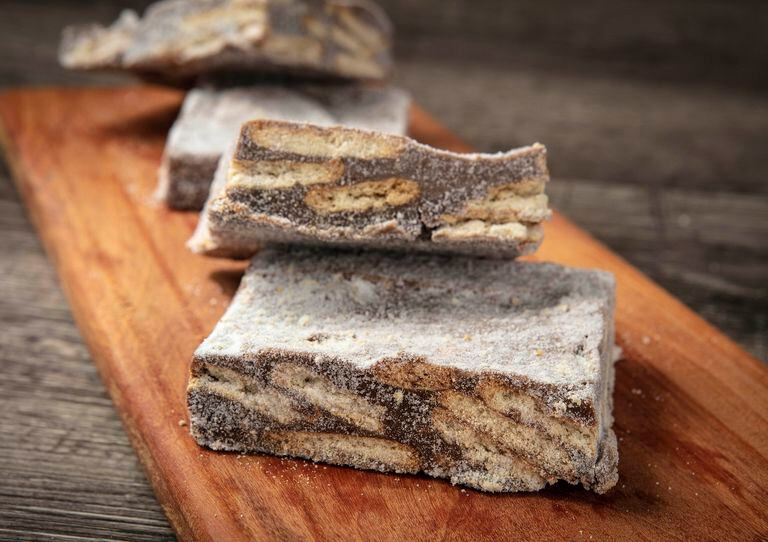

Meu portifólio
Palha italiana

Ingredientes
- 1 lata de leite condensado
- 50 g de manteiga com sal
- 1 colher (sopa) de margarina para untar
- 50 g de achocolatado
- 1 pacote de bolacha maisena
- 50 g de açúcar
Preparo
- Misture o leite condensado, o chocolate e a manteiga.
- Coloque a mistura em uma panela e leve para cozinhar em fogo baixo.
- Misture por 20 minutos sem parar, para que não grude no fundo.
- O ponto ideal é um pouco antes do ponto de brigadeiro, quando a mistura ainda deve grudar um pouco no fundo da panela.
- Após isso, desligue o fogo e reserve.
- Quebre as bolachas, mas sem esfarelar muito. O legal é deixar pedaços, para que fique crocante.
- Misture o pacote de bolacha junto com o creme feito.
- Unte uma forma com margarina e despeje a mistura feita.
- Leve a forma para a geladeira por 1 dia.
- Corte em quadrados e passe no açúcar.